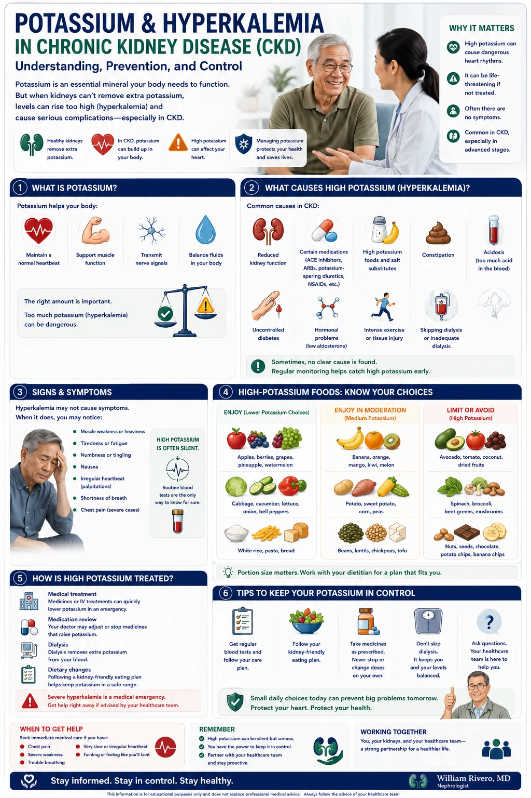

| Potassium & Hyperkalemia Guide for CKD | W.G.M. Rivero MD · FPCP · DPSN · PRC 0101184 · williamriveromd.com · 2026 |
|
Patient Education · Nephrology
Potassium & Hyperkalemia
in CKD Why potassium rises in kidney disease, how to recognize danger levels, and which Filipino foods are safe — with emergency guidance and medication warnings. Covers all CKD stages, hemodialysis, and peritoneal dialysis.
|
🍌
W.G.M. Rivero MD
FPCP · DPSN Nephrologist
williamriveromd.com
|
3.5–5.0 mEq/L Normal Range |
>5.5 mEq/L Danger Zone |
↑ Risk Cardiac Arrhythmia |
↓ Intake Primary Treatment |
Healthy kidneys filter excess potassium from the blood every day. When kidneys are damaged, potassium builds up — a condition called hyperkalemia. Even a small rise above normal can disturb the electrical signals that keep your heart beating regularly. At levels above 6.0 mEq/L, the risk of sudden cardiac arrest rises sharply.
|
❤️ Cardiac Effects of Hyperkalemia
|
⚠️ Symptoms Patients May Notice
|
| CKD Stage | Target Serum K+ | Dietary K+ Limit | Key Note |
|---|---|---|---|
| Stage 1–2 (eGFR >60) | 3.5–5.0 mEq/L | No restriction needed | Monitor annually; no limit unless K+ is elevated |
| Stage 3 (eGFR 30–59) | 3.5–5.0 mEq/L | 2,000–3,000 mg/day | Moderate vigilance; avoid high-K foods if trending up |
| Stage 4–5 (eGFR <30) | 3.5–5.0 mEq/L | 1,500–2,000 mg/day | Strict restriction; leach all vegetables; frequent monitoring |
| Hemodialysis (HD) | 3.5–5.5 mEq/L | 2,000–2,500 mg/day | K+ rises between sessions; most dangerous the day before dialysis |
| Peritoneal Dialysis (PD) | 3.5–5.5 mEq/L | 2,500–3,000 mg/day | Continuous dialysis allows slightly more; monitor monthly |
Hyperkalemia can cause sudden cardiac arrest — it may have no warning symptoms at all. Many patients feel completely normal right up to the moment of a dangerous arrhythmia. Never skip lab monitoring. If your nephrologist orders a potassium check, it is not optional.
| For educational use only. This guide does not replace individualized dietary advice from your physician or dietitian. References: KDIGO CKD 2024 · NKF KDOQI Nutrition 2020 · FNRI Philippine Food Composition Tables 2023. | williamriveromd.com Page 1 of 6 · williamriveromd.com/guides/potassium-hyperkalemia-ckd |
| Potassium & Hyperkalemia Guide for CKD | W.G.M. Rivero MD · FPCP · DPSN · williamriveromd.com · 2026 |

| For educational use only · Not a substitute for individualized medical advice · williamriveromd.com | williamriveromd.com Page 2 of 6 |
Filipino Foods — Potassium Content Reference Color-coded by potassium level · All values per standard serving · FNRI Philippine Food Composition Tables 2023 |
Page 3 of 6 · williamriveromd.com |
| Food (Filipino name) | Standard Serving | K+ (mg) | Recommendation for CKD |
|---|---|---|---|
| 🔴 HIGH POTASSIUM — >300 mg per serving · LIMIT SEVERELY in CKD 4–5 and Dialysis | |||
| Kamote tops / talbos ng kamote | 1 cup cooked | 950 mg | Avoid entirely in CKD 4–5 and dialysis — extremely high K+ |
| Buko water / coconut water | 1 cup (240 mL) | 600 mg | Avoid — marketed as "healthy" but very high potassium; dangerous in CKD |
| Kalabasa / squash (cooked) | 1 cup cooked | 500 mg | Avoid in CKD 4–5; small amounts (¼ cup) if leached in CKD 3 |
| Avocado / abokado (½ fruit) | ½ medium | 487 mg | Avoid in CKD 4–5 and dialysis; very high K+ per serving |
| Banana / lakatan (ripe) | 1 medium | 422 mg | Avoid in CKD 4–5 and dialysis — one of the highest-K+ fruits available locally |
| Saging na saba (ripe, boiled) | 1 piece | 450 mg | Avoid in CKD 4–5; 1 small unripe piece may be OK in CKD 3 with monitoring |
| Monggo / mung beans (boiled) | ½ cup cooked | 400 mg | Leach before cooking; limit to ¼ cup in CKD 4–5; discuss with dietitian |
| Kamote / sweet potato (boiled) | 1 medium (150 g) | 400 mg | Leach (peel, dice, soak 2 h, boil in fresh water) — reduces K+ 30–50%; avoid baked |
| Kangkong / water spinach (cooked) | 1 cup cooked | 350 mg | Leach and boil; discard cooking water; limit portion to ½ cup in CKD 4–5 |
| Calamansi juice (fresh, 1 cup) | 1 cup (240 mL) | 300 mg | Limit to small amounts (¼ cup) as condiment only; avoid drinking by the glass |
| Tomato (fresh, medium) | 1 medium | 290 mg | Limit — 1 slice OK as garnish; avoid tomato sauce, ketchup, and tomato soup |
| 🟡 MODERATE POTASSIUM — 150–300 mg per serving · USE CAREFULLY in CKD 4–5 | |||
| Ampalaya / bitter melon (cooked) | 1 cup cooked | 270 mg | Leach before cooking; limit to ½ cup per meal in CKD 4–5 |
| Bangus / milkfish (steamed) | 100 g | 280 mg | Good protein source; prefer steamed/boiled over fried; discard cooking water |
| Gabi / taro (boiled) | 1 cup cooked | 250 mg | Peel and leach; boil in fresh water; limit to ½ cup in CKD 4–5 |
| Okra (cooked) | 1 cup cooked | 220 mg | Generally safe in CKD 1–3; limit to ½ cup in CKD 4–5; low phosphorus bonus |
| Sayote / chayote (cooked) | 1 cup cooked | 200 mg | Moderate K+; safe at 1 cup in CKD 1–3; reduce to ½ cup in CKD 4–5 |
| Pechay / bok choy (cooked) | 1 cup cooked | 200 mg | Moderate — boil and discard water; limit to ½ cup in CKD 4–5 |
| Egg (large, boiled) | 1 large | 70 mg | Good low-K protein source; 1–2 eggs/day generally safe in most CKD stages |
| 🟢 LOW POTASSIUM — <150 mg per serving · GENERALLY SAFE for CKD | |||
| White rice (kanin, cooked) | 1 cup cooked | 55 mg | Safest staple — very low K+ and phosphorus; ideal base for a kidney diet |
| Cassava / kamoteng kahoy (boiled) | 1 cup boiled | 75 mg | Low K+ when boiled and drained; good kamote substitute for CKD patients |
| Upo / bottle gourd (cooked) | 1 cup cooked | 100 mg | Excellent low-K vegetable; safe for all CKD stages; good in sinigang and soups |
| Alugbati / Malabar spinach (cooked) | 1 cup cooked | 140 mg | Lower K+ than kangkong; good leafy green alternative for CKD; boil and drain |
| Sago (cooked, plain) | 1 cup | 0 mg | Zero potassium; good calorie source for CKD; avoid sweetened versions with milk |
| Cooking oil (canola, corn) | 1 tbsp | 0 mg | No potassium; prefer canola or olive oil; limit total fat per physician's advice |
| FNRI Philippine Food Composition Tables 2023 · KDIGO CKD 2024 · NKF KDOQI Nutrition 2020 · Educational use only. | williamriveromd.com · Page 3 of 6 |
Reducing Potassium Through Cooking · Daily Meal Planning Leaching technique · Food swaps · Sample low-potassium Filipino day |
Page 4 of 6 · williamriveromd.com |
|
①
Peel & Cut Small
Peel vegetables and cut into small thin pieces. More surface area = more potassium released into water.
|
②
Soak 2+ Hours
Soak in a large amount of water (10:1 ratio). Change the water at least once during soaking.
|
③
Drain & Rinse
Drain completely and rinse well with fresh water. Discard all soak water — it is now loaded with potassium.
|
④
Boil in Fresh Water
Boil in a new large pot of water. Discard the cooking water too — do not use as broth or soup base.
|
⑤
30–50% Reduction
Leaching reduces potassium by 30–50% depending on the food. Best for root crops and leafy vegetables.
|
Leaching works best for root crops (kamote, gabi, cassava) and leafy vegetables (kangkong, pechay, ampalaya). It does NOT work well for fruits — avoid high-potassium fruits entirely if your potassium level is elevated. Leaching also reduces some vitamins — compensate by eating a varied diet of approved low-K foods.
| Instead of (High K+) | K+ (mg) | Choose This (Lower K+) | K+ (mg) | Notes |
|---|---|---|---|---|
| Saging na saba (1 piece) | 450 | Cassava / kamoteng kahoy (boiled, 1 cup) | 75 | Good carb swap; boil and drain thoroughly |
| Avocado (½ fruit) | 487 | Papaya (small serving, ½ cup) | ~180 | Papaya is still moderate-K; limit to ½ cup in CKD 4–5 |
| Kamote tops / talbos (1 cup) | 950 | Upo / bottle gourd (1 cup cooked) | 100 | Excellent low-K leafy substitute; safe for all CKD stages |
| Buko water (1 cup) | 600 | Plain water or tap water | 0 | Buko water is NOT safe for CKD — avoid completely |
| Monggo soup (½ cup cooked) | 400 | Sayote + tofu (½ cup each, leached) | ~200 | Lower K+ protein-vegetable combo; leach sayote before use |
| Banana / lakatan (1 medium) | 422 | Canned fruit in own juice (drained, ½ cup) | ~100 | Draining canned fruit removes additional K+; avoid syrup packs |
| Meal | Food | K+ (est.) | CKD Notes |
|---|---|---|---|
| Breakfast | 1 cup white rice + 1 boiled egg + sautéed upo (½ cup, boiled and drained) + water | ~200 mg | Very low K+; excellent kidney-safe breakfast |
| Snack | Sago (½ cup, plain, unsweetened) + plain water | ~5 mg | Zero K+ snack; good calorie source without potassium burden |
| Lunch | 1 cup white rice + grilled bangus (100 g) + leached sayote (½ cup boiled) + pechay (½ cup, boiled, water discarded) | ~500 mg | Moderate — acceptable at lunch; leach all vegetables |
| Afternoon | Canned fruit (drained, ½ cup) in own juice — not syrup | ~100 mg | Draining canned fruit removes K+; avoid heavy syrup packs |
| Dinner | 1 cup white rice + steamed tilapia or galunggong (100 g) + stir-fried alugbati (½ cup, boiled first, water discarded) | ~400 mg | Low-K dinner; always discard all cooking water |
| TOTAL | Full day — kidney-safe low-potassium Filipino menu | ~1,205 mg | Well within 1,500–2,000 mg limit for CKD 4–5 |
Potassium restriction is individualized — your nephrologist sets your limit based on your current serum K+ level and CKD stage. Do not restrict severely if your potassium is normal (3.5–5.0 mEq/L). Too-low potassium (hypokalemia) is also dangerous. Always follow your doctor's specific dietary instructions.
| NKF KDOQI Nutrition 2020 · KDIGO CKD 2024 · FNRI 2023 · Educational use only. | williamriveromd.com · Page 4 of 6 |
Recognizing Hyperkalemia · When to Seek Help · Medications Symptoms · Emergency thresholds · Drugs that raise or lower potassium |
Page 5 of 6 · williamriveromd.com |
|
Muscle Weakness / Fatigue
Heavy, weak feeling in arms and legs — especially thighs. May feel like you cannot stand or climb stairs. Often the earliest symptom patients notice.
|
Palpitations / Irregular Heartbeat
Fluttering, pounding, or skipping sensations in the chest. Irregular heartbeat (arrhythmia) — may feel like the heart is "jumping." Seek care immediately.
|
Numbness / Tingling
Pins-and-needles sensation in hands, feet, and around the mouth. High potassium disrupts nerve signal transmission throughout the body.
|
|
Nausea
Stomach discomfort, nausea, or vomiting — non-specific but often accompanies elevated potassium, especially in acute rises.
|
Difficulty Breathing
Shortness of breath at rest or with minimal activity — can indicate severe hyperkalemia affecting respiratory muscles. Seek emergency care immediately.
|
NO SYMPTOMS — Most Dangerous
Many patients with K+ above 6.0 mEq/L feel completely normal. Sudden cardiac arrest can occur without any warning. This is why lab monitoring is non-negotiable.
|
|
|
||||||||||||||||||||||||||||||||
Never stop a prescribed ACE inhibitor or ARB on your own — they protect your kidneys even though they raise potassium slightly. Instead, manage potassium through diet and discuss with your nephrologist whether a potassium binder is needed. Never take NSAIDs (mefenamic acid, ibuprofen) without your doctor's approval — they worsen kidney function AND raise potassium simultaneously.
| KDIGO CKD 2024 · NKF KDOQI Nutrition 2020 · MIMS Philippines 2025 · Kovesdy CP et al. JASN 2022 · Educational use only. Medication advice must be individualized by your physician. | williamriveromd.com Page 5 of 6 · williamriveromd.com/guides/potassium-hyperkalemia-ckd |
Quick Reference · Key Takeaways · When to Call Your Doctor Summary card · Most important rules · Monitoring schedule |
Page 6 of 6 · williamriveromd.com |
| Serum K+ Level | Status | What to Do |
|---|---|---|
| 3.5–5.0 mEq/L | ✅ Normal | Continue current diet. Recheck as scheduled (every 1–3 months in CKD). |
| 5.1–5.5 mEq/L | ⚠️ Mild High | Tighten dietary restriction. Review all medications. Recheck in 1–2 weeks. Call your nephrologist. |
| 5.6–6.0 mEq/L | 🔶 Moderate | Contact nephrologist same day. Strict dietary restriction. May need potassium binder. ECG monitoring. |
| >6.0 mEq/L | 🚨 Danger | Go to the EMERGENCY ROOM immediately. Risk of sudden cardiac arrest. Call for help — do not drive alone. |
| >6.5 mEq/L | 🚑 Life-threatening | Medical emergency. IV calcium gluconate, IV insulin + glucose, emergency dialysis may be needed. |
🍌 The "Banana Rule" for CKD PatientsBananas, buko water, and kamote tops are the three most common potassium mistakes Filipino CKD patients make — all are perceived as "healthy" but are among the highest-K+ foods available. Avoid all three if your potassium is elevated. Also avoid sports drinks (Gatorade, Pocari Sweat) and salt substitutes — both contain potassium. ⚠️ Never Miss DialysisFor dialysis patients, skipping even one session allows potassium to accumulate to dangerous levels — especially over the Monday–Wednesday gap (3 days off). Restrict potassium most strictly during the longest inter-dialytic gap. The day before dialysis is the highest-risk period. 🧂 Hidden Potassium Sources
|
🌾 Safest Filipino Staples for CKD
📅 Monitoring Schedule
📞 Call Your Nephrologist If:
|
| For educational use only. This guide does not replace individualized care from your nephrologist or dietitian. Potassium targets, medication decisions, and dietary limits must be set by your physician based on your lab results. References: KDIGO CKD 2024 · NKF KDOQI Nutrition 2020 · FNRI 2023. | williamriveromd.com Page 6 of 6 · williamriveromd.com/guides/potassium-hyperkalemia-ckd |